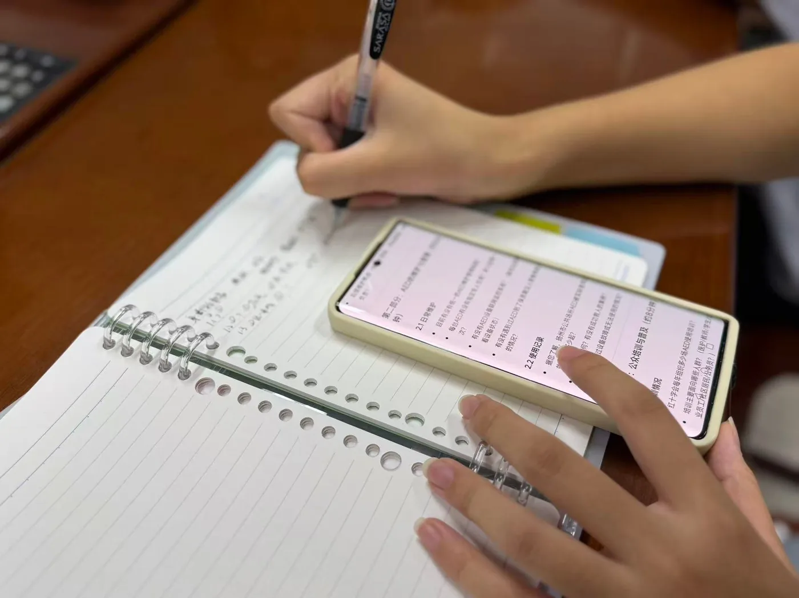
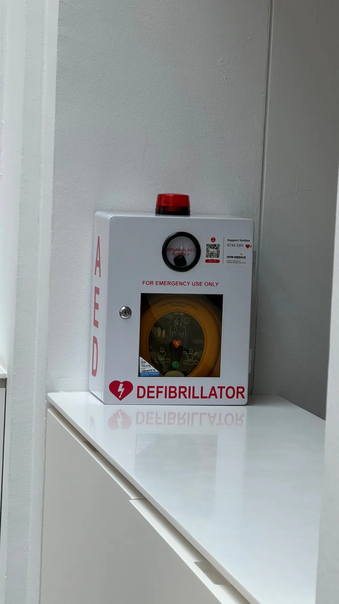
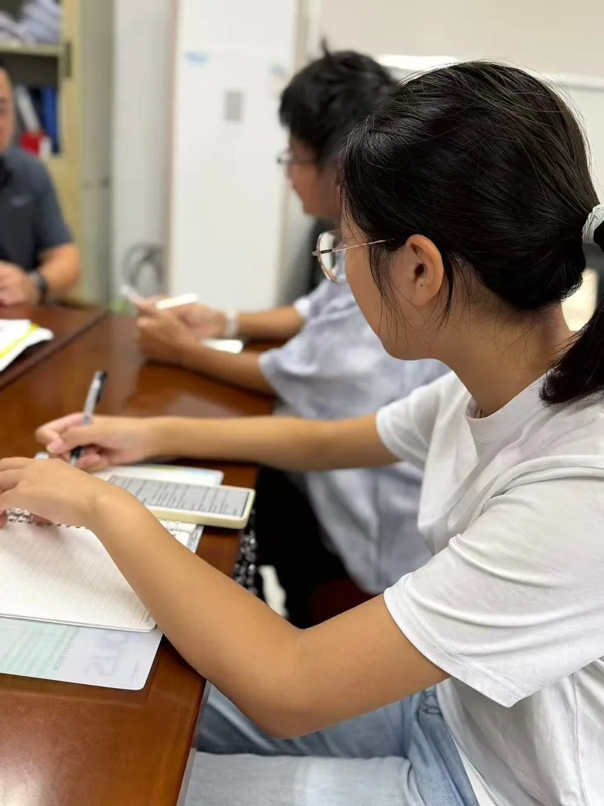
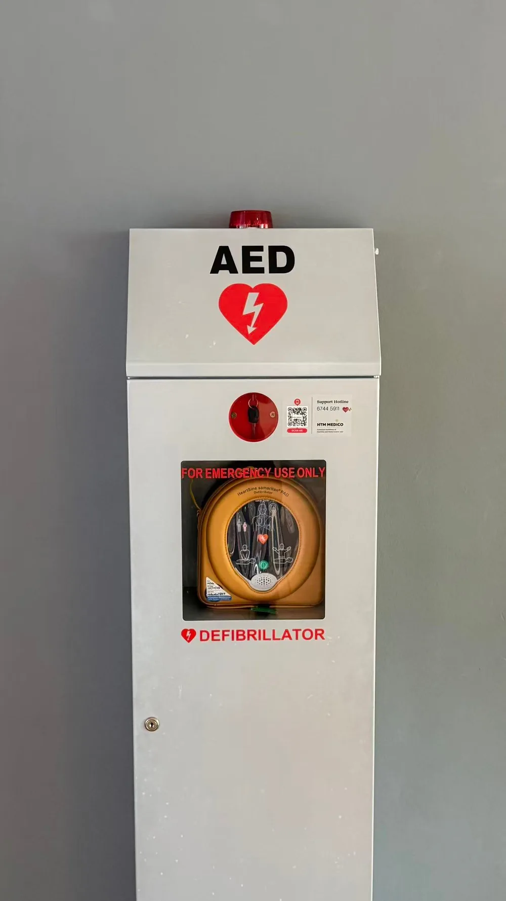
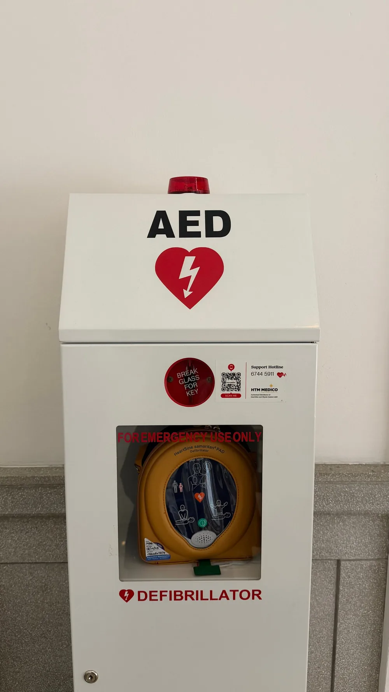
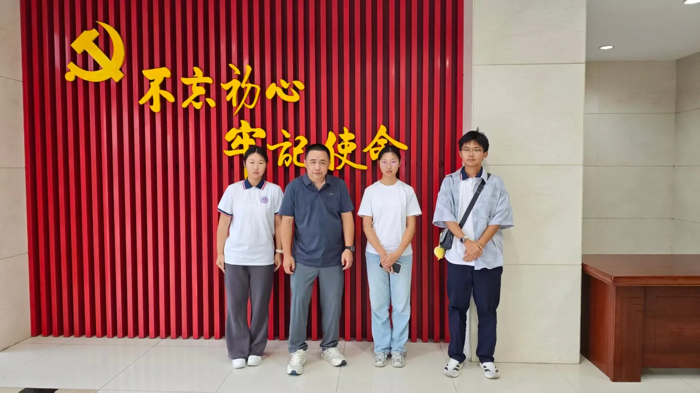

如果身边有人倒下
你只有 4 分钟
研急救之策，筑护城之心 —— 扬州市 AED 安全保障项目实践
邗江一中课题组 · 关于普及社区与校园 AED 配置及急救科普培训的调查
两个数字之间，隔着一条命
脑细胞开始不可逆死亡
救护车平均到达时间
所以救命的不能只有救护车 —— 必须有就在现场的人，和就在手边的设备
于是我们问了三个问题
DATA
数据 · 三周线上问卷，133 份回收

三周问卷 · 一页看全貌
133 份回答，三个断点

图为京华城实地拍摄到的 AED
9.26 — 10.18
一次访谈 · 三周问卷 · 一次实地

国庆期间没有外出调研，主要精力放在问卷投放与数据回收
有效问卷 · 截至 2026.10.04
133 份回答，覆盖 10 个省份
年龄分布 · 学生与中年群体合计超过 80%
第 3 题 · 您是否了解 AED（自动体外除颤器）
只有 15% 的人说「非常了解」
超过三分之一的人，对 AED 只有模糊印象
第 5 题 · 是否接受过心肺复苏或 AED 培训
培训过，但手生了
「接受过」不等于「会做」—— 近四成人已经生疏
第 7 题 · 认为自己能正确使用 AED 吗
54.89% 说「可能需要指导」
第 6 题里，还有 26.32% 的人承认：遇到有人倒地，会倾向于先等 120
第 8 题 · 是否担心因使用 AED 承担法律责任
74.43% 担心承担责任
即使会操作，也有近四分之三的人会因为怕担责而犹豫
第 4、10 题 · 配置与醒目度
配了，但你可能找不到
回答「已配备，但我不知道在哪」
另有约 22.5% 的人说：不清楚自己所在社区或学校到底有没有配
第 10 题问「是否醒目」，多数人选择「一般，要仔细看」或「不醒目」
第 9 题 · 您认为理想的 AED 配置密度
36.84% 希望「每栋楼至少一个」
公众的期待，比现状要密得多
WITNESS
一线 · 邗江区红十字会培训人员

问：讲座里大家最常问什么
受访者原话：「没有人担心电错人」
高频问题还有：AED 能不能重复使用？
大家真正困惑的是操作顺序，不是安全问题
受访者原话
一线告诉我们的事实

2026 年 3 月 26 日 · 邗江中专
一台 AED，救回一条命
一名学生倒在地上，老师取来 AED 及时使用，
把人救活了
受访者原话：「这种案例非常的多」
扬马等大型赛事的保障中，也多次成功使用
不是 AED 没用，是大多数人不知道它救过人
受访者给的三条路径
想找、想学，都有路
能看到附近 AED 的位置
不单独开班
一名急救员带机巡回
最大的短板不是设备数量，而是密集度 —— 「有些 AED 要跑很长一段路才能找到」
GAP
落差 · 设备、认知与法律之间
不是设备不够，是三处断开
三条建议，对应三处断开
已落地 · 与邗江区红十字会取得联系
下一步：11 月，走进红会
CPR + AED 实操流程
做一次面向公众的讲座
与布点分布的权威数据
目前已与 邗江区红十字会 房主任 取得初步联系，11 月将安排上述三项工作
这还不是一份完成的报告，而是一份进行中的汇报
来源如实标注
一台在扬州，两台在新加坡


新加坡街头 AED 分布密集、位置醒目 —— 对比之下，密度与醒目度正是我们最缺的两块
想学，是有地方去的
扬州市红十字会救护培训基地
扬子江南路 248 号
9:00—12:00 / 14:00—18:00
AED 模拟机实操
需提前电话预约
调研路上，不是只有严肃时刻
以下全部来自我们自己的群聊记录

设备配得再多
也得有人敢按下去
如果因此多一个人知道「AED 在哪、怎么用、用了不担责」——
这件事就值得。
Thank you for
joining us
研急救之策，筑护城之心 —— 扬州市 AED 安全保障项目实践
孙子涵 · 梅艺馨 · 武馨儿 · 唐辰茜 · 刘梓旭 · 潘禹彤 · 倪筱雅